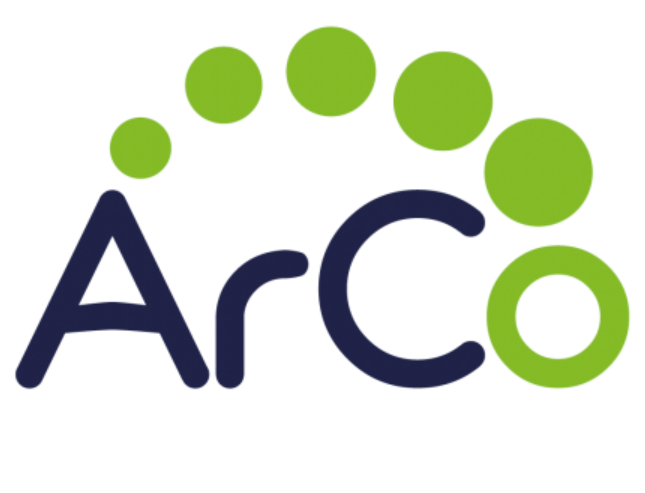
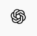
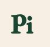

1) To use LLMs such as Pi AI and ChatGPT to produce new knowledge and propose RDF triples.
2) To enrich the ArCo ontologies using the SPARQL endpoint and the LLM’s output.



1) selecting the topic the topic by querying the KG;
2) exploring ArCo’s ontology to identify classes;
3) retrieving the existing information about our event from the KG;
4) stating the main problem to solve during the project;
5) engineering the prompts for the LLMs;
6) comparing and analyzingthe LLMs’ outputs;
7) designing new triples, thus enriching ArCo’s ontology;
8) creating and publishing of the website.